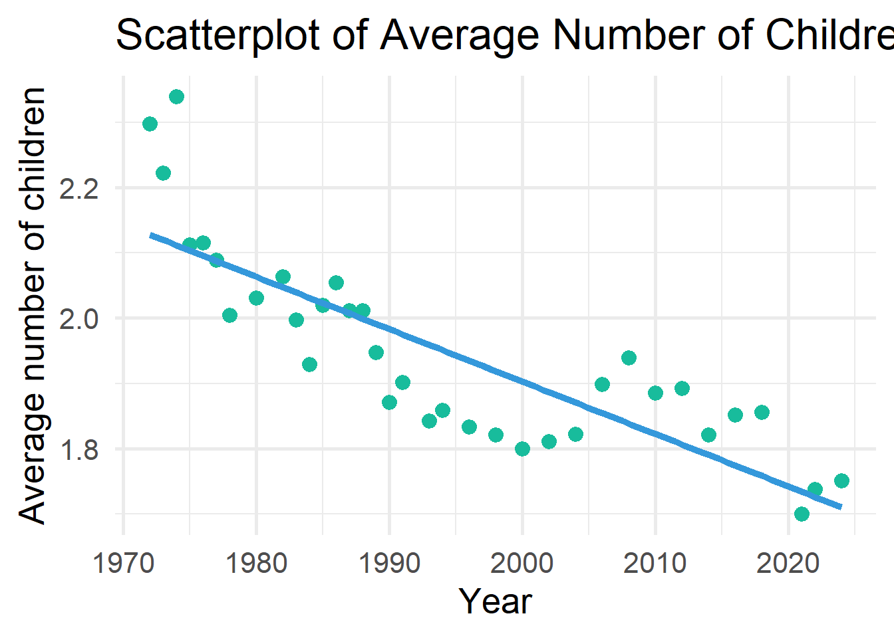
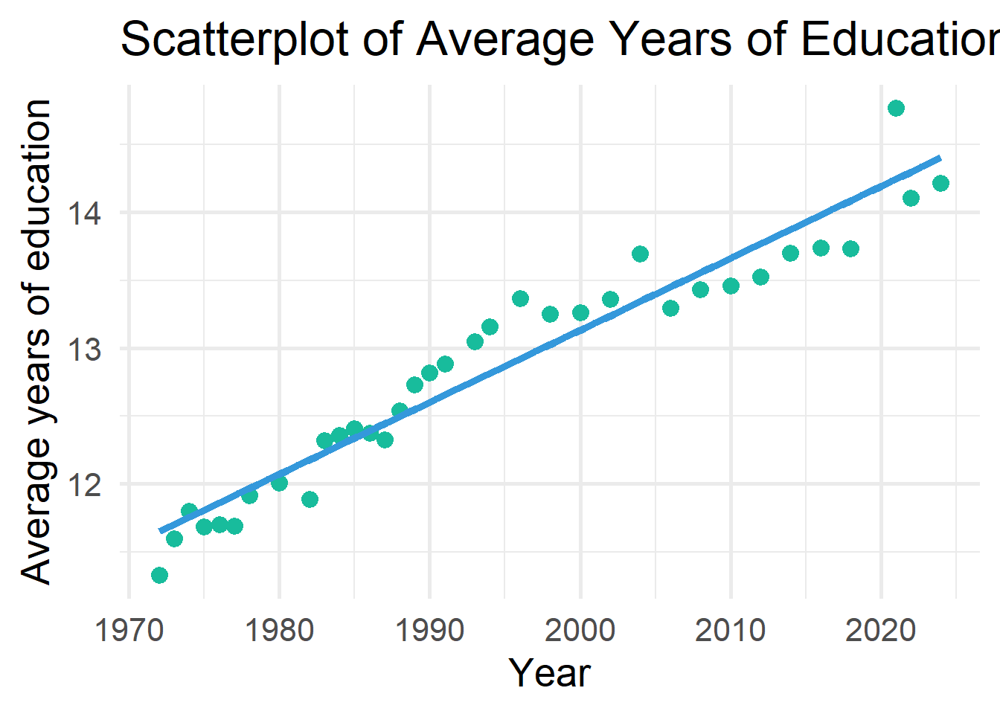
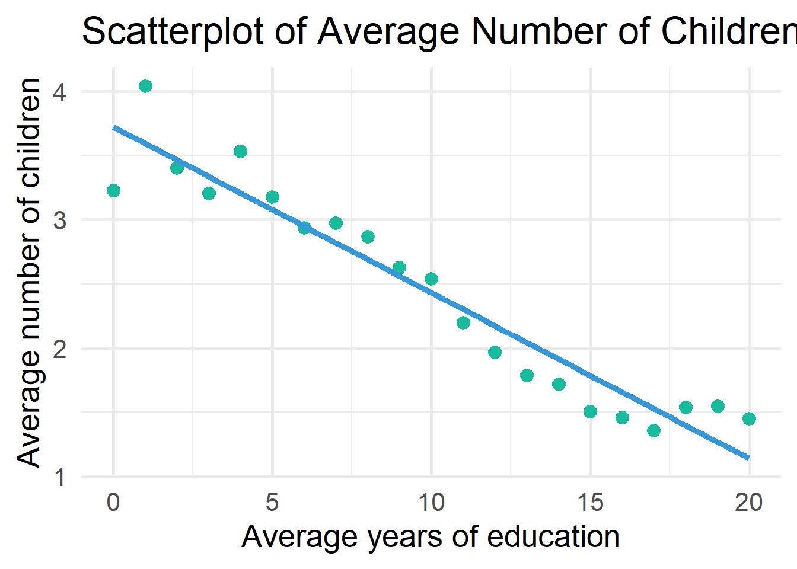
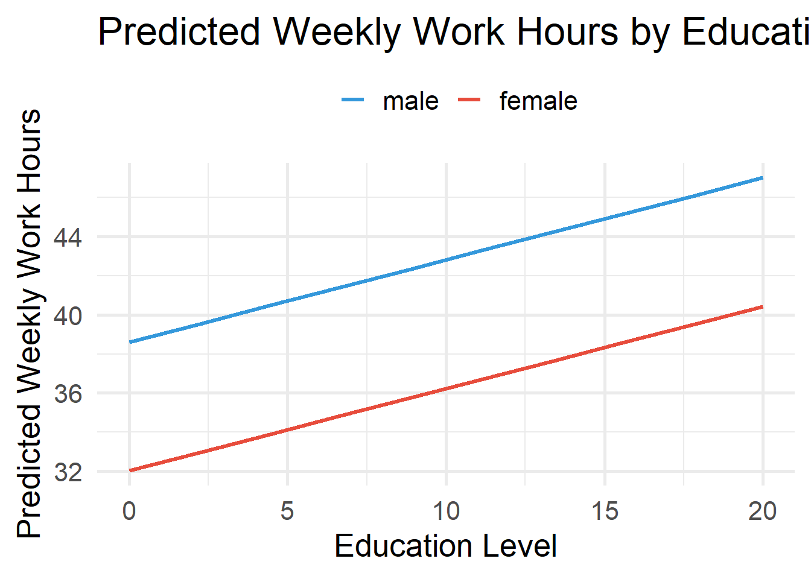
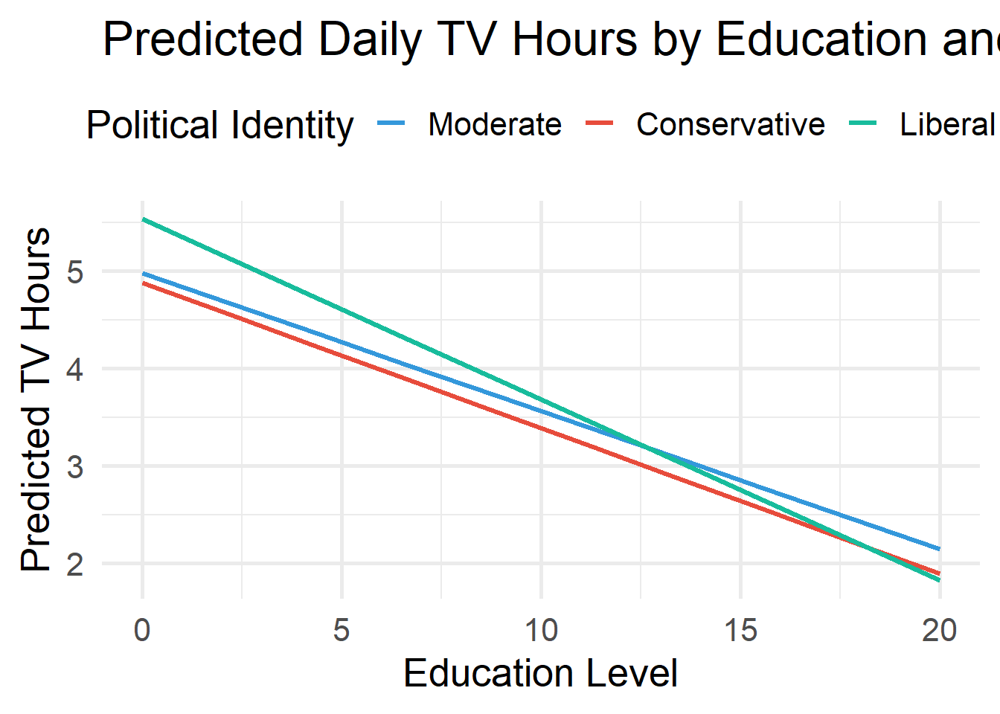

[conflicted] Will prefer haven::is.labelled over any other package.
[conflicted] Will prefer dplyr::filter over any other package.
[conflicted] Will prefer dplyr::summarise over any other package.OLS Regression I
Agenda
- Two continuous variables
- One continuous & one categorical variable
Learning objectives
By the end of the lecture, you will be able to …
- Use R to produce multivariate regression
- Use R to create publication ready regression tables (e.g., Table 02)
- Use R to produce \(R^2\) and interpret it
Code-along 07
Download and open code-along-07.qmd
Packages
Load the standard packages and new package modelbased.
Load your data
Variables
yearSurvey yeartvhoursHours per day watching tvrealrincR’s income in constant $ageAge of respondenteducRespondents highest edu credithrs1How many hours did you work last weekchildsHow many children have you ever had?polviewsThink of self as liberal or conservativesexRespondents sexmaritalR’s marital status
Make a df with only the (pretty) categorical and continuous variables we’ll analyze.
# Categorical Variables
my_cat <- gss_all |>
select(id, year, polviews, sex, marital) |>
zap_missing() |>
mutate(
polviews = as_factor(polviews),
sex = as_factor(sex),
marital = as_factor(marital)) |>
droplevels()
# Continuous Variables
my_con <- gss_all |>
select(id, year, tvhours, age, educ, hrs1, realrinc, childs) |>
mutate(
age = as.numeric(age),
educ = as.numeric(educ),
hrs1 = as.numeric(hrs1),
realrinc = as.numeric(realrinc),
childs = as.numeric(childs))
# Combine the two dataframes
my_data <- full_join(my_cat, my_con, by = c("year", "id")) # match by 2 varsTwo continuous variables
Have the average number of children changed over time?
. . .
`geom_smooth()` using formula = 'y ~ x'
assumed to be a count, but can be modeled with OLS if treated as continuous
Simple Regression
# A tibble: 2 × 7
term estimate std_error statistic p_value lower_ci upper_ci
<chr> <dbl> <dbl> <dbl> <dbl> <dbl> <dbl>
1 intercept 17.2 0.811 21.2 0 15.7 18.8
2 year -0.008 0 -18.9 0 -0.008 -0.007Proportional Reduction of Error
The better a least-squares line is, the better it can predict an outcome with the least amount of error
\(r^2\) is a proportional reduction of error (PRE) measure
\(PRE = \frac{E1 - E2}{E1}\)
It tells us how well the regression model fits the data
\(R^2 = \frac{\sum E1 - \sum E2}{\sum E1}\)
E1
Errors of prediction made when IV is ignored
Equivalent to the sum of errors we would have if we guessed that every Y was equal to the mean of Y
aka Sum of Squares Total (SST)
E2
Errors of prediction made based on IV
Equivalent to the sum of errors we would have if we used our least squares line to predict Y
aka Sum of Squared Errors (SSE)
Use get_regression_points() to see the residuals.
. . .
# A tibble: 10 × 5
ID childs year childs_hat residual
<int> <dbl> <dbl> <dbl> <dbl>
1 22086 0 1988 1.99 -1.99
2 55888 3 2012 1.81 1.19
3 35179 2 1998 1.92 0.084
4 20616 0 1987 2 -2
5 66452 3 2021 1.74 1.26
6 7040 0 1976 2.08 -2.08
7 65977 4 2021 1.74 2.26
8 24755 2 1989 1.98 0.015
9 29451 3 1994 1.95 1.05
10 1681 0 1973 2.11 -2.11 # A tibble: 10 × 7
ID year childs mean_pred childs_hat E1 E2
<int> <dbl> <dbl> <dbl> <dbl> <dbl> <dbl>
1 27347 1991 1 1.91 1.97 -0.909 -0.97
2 47275 2006 2 1.91 1.86 0.0906 0.145
3 28521 1993 0 1.91 1.95 -1.91 -1.95
4 28198 1993 2 1.91 1.95 0.0906 0.046
5 22972 1988 1 1.91 1.99 -0.909 -0.993
6 57632 2014 1 1.91 1.79 -0.909 -0.793
7 22355 1988 4 1.91 1.99 2.09 2.01
8 1050 1972 2 1.91 2.12 0.0906 -0.115
9 47787 2006 0 1.91 1.86 -1.91 -1.86
10 32541 1996 0 1.91 1.93 -1.91 -1.93 \(R^2\) ranges from 0 to 1.0
1.0 = Our independent variable accounts for all the variation that we find in the dependent variable (it predicts the dependent variable perfectly).
0.0 = Our independent variable does not improve our ability to predict the dependent variable.
In the social sciences, a high \(R^2\) is rare!
\(R^2\) calculation
. . .
R
. . .
\(R^2\)
Use get_regression_summaries() to see \(R^2\).
. . .
# A tibble: 1 × 9
r_squared adj_r_squared mse rmse sigma statistic p_value df nobs
<dbl> <dbl> <dbl> <dbl> <dbl> <dbl> <dbl> <dbl> <dbl>
1 0.005 0.005 3.07 1.75 1.75 357. 0 1 75407\(R^2\) shows the amount of variance of the DV explained by the IV(s).
\(R^2\) interpretation
An \(R^2\) of \(0.61\) means that knowing the literacy rate of a country reduces our error in predicting college enrollment by 61%.
The national literacy rate explains 61% of variation in college enrollment.
Are the trends explained by increases in education?
`geom_smooth()` using formula = 'y ~ x'
`geom_smooth()` using formula = 'y ~ x'Warning: Removed 1 row containing non-finite outside the scale range
(`stat_smooth()`).Warning: Removed 1 row containing missing values or values outside the scale range
(`geom_point()`).
# A tibble: 2 × 7
term estimate std_error statistic p_value lower_ci upper_ci
<chr> <dbl> <dbl> <dbl> <dbl> <dbl> <dbl>
1 intercept 17.2 0.811 21.2 0 15.7 18.8
2 year -0.008 0 -18.9 0 -0.008 -0.007. . .
# A tibble: 3 × 7
term estimate std_error statistic p_value lower_ci upper_ci
<chr> <dbl> <dbl> <dbl> <dbl> <dbl> <dbl>
1 intercept 5.26 0.813 6.47 0 3.66 6.85
2 year -0.001 0 -2.00 0.045 -0.002 0
3 educ -0.131 0.002 -64.5 0 -0.134 -0.127Change in PRE Measure
# A tibble: 1 × 9
r_squared adj_r_squared mse rmse sigma statistic p_value df nobs
<dbl> <dbl> <dbl> <dbl> <dbl> <dbl> <dbl> <dbl> <dbl>
1 0.005 0.005 3.07 1.75 1.75 357. 0 1 75407. . .
tbl_regression()
OLS Regression predicting number of children by survey year and years of education
| Characteristic | Beta | 95% CI | p-value |
|---|---|---|---|
| (Intercept) | 5.3 | 3.7, 6.9 | <0.001 |
| GSS year for this respondent | 0.00 | 0.00, 0.00 | 0.045 |
| educ | -0.13 | -0.13, -0.13 | <0.001 |
| Abbreviation: CI = Confidence Interval | |||
model_02 |> tbl_regression(intercept = TRUE, estimate_fun = ~ style_number(.x, digits = 4))
tbl_regression()
OLS Regression predicting number of children by survey year and years of education
| Characteristic | Beta | SE | p-value |
|---|---|---|---|
| (Intercept) | 5.3 | 0.813 | <0.001 |
| GSS year for this respondent | 0.00 | 0.000 | 0.045 |
| educ | -0.13 | 0.002 | <0.001 |
| Abbreviations: CI = Confidence Interval, SE = Standard Error | |||
tbl_regression()
OLS Regression predicting number of children by survey year and years of education
| Characteristic | Beta1 | SE |
|---|---|---|
| (Intercept) | 5.3*** | 0.813 |
| GSS year for this respondent | 0.00* | 0.000 |
| educ | -0.13*** | 0.002 |
| R² | 0.057 | |
| No. Obs. | 75,166 | |
| 1 p<0.05; p<0.01; p<0.001 | ||
1 continuous variable & 1 categorical variable
Are weekly hours worked related to education and gender?
. . .
# A tibble: 3 × 7
term estimate std_error statistic p_value lower_ci upper_ci
<chr> <dbl> <dbl> <dbl> <dbl> <dbl> <dbl>
1 intercept 38.6 0.32 121. 0 38.0 39.2
2 educ 0.42 0.022 18.7 0 0.376 0.464
3 sex-female -6.58 0.132 -49.9 0 -6.83 -6.32 tbl_regression()
OLS Regression predicting weekly work hours by years of education and gender
| Characteristic | Beta1 | SE |
|---|---|---|
| (Intercept) | 39*** | 0.320 |
| educ | 0.42*** | 0.022 |
| sex | ||
| male | — | — |
| female | -6.6*** | 0.132 |
| R² | 0.061 | |
| No. Obs. | 43,167 | |
| 1 p<0.05; p<0.01; p<0.001 | ||
tbl_regression()
OLS Regression predicting weekly work hours by years of education and gender
| Characteristic | Beta1 | SE |
|---|---|---|
| (Intercept) | 39*** | 0.320 |
| educ | 0.42*** | 0.022 |
| Women | -6.6*** | 0.132 |
| R² | 0.061 | |
| No. Obs. | 43,167 | |
| 1 p<0.05; p<0.01; p<0.001 | ||
estimate_means()
# A tibble: 2 × 7
sex Mean SE CI_low CI_high t df
<fct> <dbl> <dbl> <dbl> <dbl> <dbl> <int>
1 male 44.4 0.0923 44.2 44.5 480. 43164
2 female 37.8 0.0939 37.6 38.0 402. 43164R calculates the mean values of every variable in the model except sex, and sets all of those variables equal to their means. Then (once again) it sets female = 0 in every observation, calculates predicted probabilities for each individual, and averages those.
Then it goes back and resets female to 1 in every observation, again calculates predicted probabilities for each individual and outputs the average of those.
Outputs can be interpreted as the predicted probabilities for women and men if they were all average in all other respects.
estimate_means()
estimate_means()
\(\color{#18bc9c}{38.601} + \color{#fd7e14}{0.420}_{educ} - \color{#e74c3c}{6.576}_{female}\)
# A tibble: 6 × 8
educ sex Mean SE CI_low CI_high t df
<dbl> <fct> <dbl> <dbl> <dbl> <dbl> <dbl> <int>
1 0 male 38.6 0.320 38.0 39.2 121. 43164
2 0 female 32.0 0.323 31.4 32.7 99.0 43164
3 2.22 male 39.5 0.273 39.0 40.1 145. 43164
4 2.22 female 33.0 0.276 32.4 33.5 119. 43164
5 4.44 male 40.5 0.226 40.0 40.9 179. 43164
6 4.44 female 33.9 0.230 33.4 34.3 148. 43164men with 0 years of education = \(\color{#18bc9c}{38.601} + \color{#fd7e14}{0.420}_{educ}*0\)
women with 0 years of education \(\color{#18bc9c}{38.601} + \color{#fd7e14}{0.420}_{educ}*0 -\color{#e74c3c}{6.576}_{female}\)
men with 2.222 years of education \(\color{#18bc9c}{38.601} + \color{#fd7e14}{0.420}_{educ}*2.222\)
women with 2.222 years of education \(\color{#18bc9c}{38.601} + \color{#fd7e14}{0.420}_{educ}*2.222-\color{#e74c3c}{6.576}_{female}\)

Are weekly hours worked related to education and marital status?
. . .
# A tibble: 6 × 7
term estimate std_error statistic p_value lower_ci upper_ci
<chr> <dbl> <dbl> <dbl> <dbl> <dbl> <dbl>
1 intercept 36.5 0.33 110. 0 35.9 37.1
2 educ 0.378 0.023 16.4 0 0.333 0.424
3 marital-widowed -5.94 0.385 -15.4 0 -6.70 -5.19
4 marital-divorced 0.605 0.198 3.06 0.002 0.218 0.993
5 marital-separated -0.278 0.379 -0.733 0.464 -1.02 0.465
6 marital-never married -1.76 0.163 -10.8 0 -2.08 -1.44 Regression Predicting Weekly Work Hours by Years of Education and Marital Status
model |>
tbl_regression(
intercept = TRUE,
label = list(
marital = "Marital status (ref. = married)")) |>
remove_row_type(type = c("reference")) |>
modify_column_hide(conf.low) |>
modify_column_unhide(
column = std.error) |>
remove_abbreviation() |>
add_significance_stars() |>
add_glance_table(
include = c("r.squared", "nobs"))| Characteristic | Beta1 | SE |
|---|---|---|
| (Intercept) | 37*** | 0.330 |
| educ | 0.38*** | 0.023 |
| Marital status (ref. = married) | ||
| widowed | -5.9*** | 0.385 |
| divorced | 0.61** | 0.198 |
| separated | -0.28 | 0.379 |
| never married | -1.8*** | 0.163 |
| R² | 0.015 | |
| No. Obs. | 43,178 | |
| 1 p<0.05; p<0.01; p<0.001 | ||
Are daily TV hours related to education and political identity?
. . .
my_data <- my_data %>%
mutate(pol_group = case_when(
polviews %in% c("extremely liberal", "liberal", "slightly liberal") ~ "Liberal",
polviews == "moderate, middle of the road" ~ "Moderate",
polviews %in% c("slightly conservative", "conservative", "extremely conservative") ~ "Conservative",
TRUE ~ NA_character_))
model <- lm(tvhours ~ educ + pol_group, data = my_data)
moderndive::get_regression_table(model)# A tibble: 4 × 7
term estimate std_error statistic p_value lower_ci upper_ci
<chr> <dbl> <dbl> <dbl> <dbl> <dbl> <dbl>
1 intercept 5.00 0.056 89.1 0 4.89 5.12
2 educ -0.159 0.004 -40.4 0 -0.166 -0.151
3 pol_group-Liberal 0.157 0.031 5.15 0 0.097 0.217
4 pol_group-Moderate 0.192 0.028 6.76 0 0.136 0.247relevel()
# A tibble: 4 × 7
term estimate std_error statistic p_value lower_ci upper_ci
<chr> <dbl> <dbl> <dbl> <dbl> <dbl> <dbl>
1 intercept 5.20 0.054 96.4 0 5.09 5.30
2 educ -0.159 0.004 -40.4 0 -0.166 -0.151
3 pol_group-Conservative -0.192 0.028 -6.76 0 -0.247 -0.136
4 pol_group-Liberal -0.035 0.03 -1.15 0.25 -0.093 0.024Does the relationship between TV hours and education differ by political identity?
. . .
# A tibble: 6 × 7
term estimate std_error statistic p_value lower_ci upper_ci
<chr> <dbl> <dbl> <dbl> <dbl> <dbl> <dbl>
1 intercept 4.98 0.088 56.5 0 4.81 5.16
2 educ -0.142 0.007 -21.1 0 -0.155 -0.129
3 pol_group-Conservative -0.1 0.128 -0.781 0.435 -0.351 0.151
4 pol_group-Liberal 0.553 0.132 4.20 0 0.295 0.811
5 educ:pol_group-Conserv… -0.008 0.01 -0.787 0.431 -0.026 0.011
6 educ:pol_group-Liberal -0.044 0.01 -4.55 0 -0.063 -0.025The coefficient for educ is $-0.142 $, meaning that for moderates (the reference group), each additional year of education is associated with -0.142 fewer tv hours per day.
The coefficient for pol_group: Conservative is \(-0.1\). This is the difference in the outcome between moderates and conservatives when education = 0. Conservatives watch -0.1 TV hours per day fewer than moderates when education is zero. Not statistically significantly different.
The interaction term educ:pol_groupConservative is \(-0.008\). It tells us whether the relationship between education and TV hours differs between moderates and conservatives It adjusts the slope of education for conservatives So for conservatives, the effect of education is:
\(-0.142 -0.008 = -0.15\)
This means that for conservatives, each additional unit of education is associated with only \(-0.15\) fewer daily TV hours.
# Get predicted values
preds <- estimate_means(model, by = c("educ", "pol_group"))
# Plot using ggplot2
preds |>
ggplot(aes(x = educ, y = Mean, color = pol_group)) +
geom_line(linewidth = 1.2) +
labs(
title = "Predicted Daily TV Hours by Education and Political Identity",
x = "Education Level",
y = "Predicted TV Hours",
color = "Political Identity") +
theme_minimal(20) +
theme(legend.position = "top")
Think Like a Statistician
Think Like a Statistician
1. Run and interpret a regression predicting realrinc with hrs1 and educ
. . .
# A tibble: 3 × 7
term estimate std_error statistic p_value lower_ci upper_ci
<chr> <dbl> <dbl> <dbl> <dbl> <dbl> <dbl>
1 intercept -33065. 802. -41.2 0 -34637. -31494.
2 hrs1 481. 10.5 45.6 0 460. 501.
3 educ 2746. 50.4 54.5 0 2647. 2845.Think Like a Statistician
2. Add childs to the regression. Interpret the output.
. . .
# A tibble: 4 × 7
term estimate std_error statistic p_value lower_ci upper_ci
<chr> <dbl> <dbl> <dbl> <dbl> <dbl> <dbl>
1 intercept -39248. 851. -46.1 0 -40917. -37580.
2 hrs1 481. 10.5 45.8 0 460. 501.
3 educ 2959. 51.2 57.8 0 2858. 3059.
4 childs 1960. 93.9 20.9 0 1776. 2144.Think Like a Statistician
3. Add marital to the regression. Interpret the output.
. . .
# A tibble: 8 × 7
term estimate std_error statistic p_value lower_ci upper_ci
<chr> <dbl> <dbl> <dbl> <dbl> <dbl> <dbl>
1 intercept -33122. 886. -37.4 0 -34859. -31385.
2 hrs1 468. 10.5 44.7 0 448. 489.
3 educ 2888. 51.0 56.6 0 2788. 2988.
4 childs 1021. 105. 9.76 0 816. 1226.
5 marital-widowed -4122. 826. -4.99 0 -5740. -2503.
6 marital-divorced -4029. 420. -9.60 0 -4851. -3206.
7 marital-separated -5769. 816. -7.07 0 -7368. -4171.
8 marital-never married -8792. 394. -22.3 0 -9564. -8020.